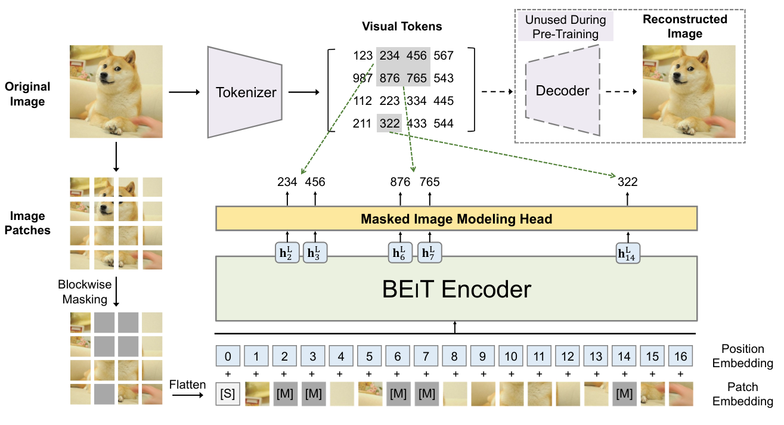

Possible Applications of the Transformer Architecture#
In the previous sections, we demonstrated the capabilities of transformers through an application of predicting the next token (such as GPT). We also discussed the difference between encoder, decoder, and complete architecture for NLP tasks.
What’s great about the transformers architecture is that it is very versatile. It can be applied to many different problems, unlike convolutional layers which are biased (making them very fast and effective on images).
In this course, we will quickly present some classic transformer architectures in different fields, primarily NLP and computer vision.
BERT#
The paper BERT: Pre-training of Deep Bidirectional Transformers for Language Understanding proposes a method for training an encoder-type language model in an unsupervised manner.
Note on unsupervised training for NLP: One of the strengths of language models (LLMs) like GPT and BERT is that they can be trained on large amounts of data without needing to annotate them. For GPT, we take a text document, hide the end, and ask the model to generate it. The loss is calculated by comparing the model’s generation to the original text (as we did to generate Molière). For BERT, the approach is slightly different.
Model Training#
BERT is an encoder model, meaning it considers the context of words both to the right and left (before and after the current word). To train it, we cannot simply predict the next words as with GPT.
Masked Language Model (MLM): BERT is a Masked Language Model (MLM). During training, certain words in a sentence are masked (at random positions) and the model is asked to predict them using the context around the masked word.

Figure from blogpost
Next Sentence Prediction (NSP): BERT is also pre-trained to determine if sentence B follows sentence A in the text, helping the model understand relationships between sentences.
Note: To learn more about BERT and how to fine-tune it, you can refer to Course 10 on BERT.
Usefulness of BERT#
BERT and other encoder-type language models (RoBERTa, ALBERT, etc.) are used as a base for more specific tasks. They are then fine-tuned for other tasks, including those mentioned in the previous notebook (sentiment analysis, text classification, etc.).
Note: We have seen how to train encoder and decoder models in an unsupervised manner for NLP tasks (BERT and GPT). It is also possible to train a complete model (encoder, decoder, and cross attention) in an unsupervised manner. This is the case for the T5 model. We do not describe its operation in this notebook, but for more information, you can refer to the blogpost.
Transformers for Image Processing#
A few years after the boom of transformers in the field of NLP, their use in computer vision also revolutionized the field. The paper An Image is Worth 16x16 Words: Transformers for Image Recognition at Scale introduces an application of an encoder-type transformer adapted for image processing.
ViT: Vision Transformer#
This paper introduces the Vision Transformer (ViT) which is based on dividing the image into patches that are then fed into the transformer as tokens.

As can be seen on the right side of the figure, the architecture corresponds to an encoder-type architecture (the only difference from Attention Is All You Need is the application of norms before the layers rather than after).
In the Vision Transformer (ViT) model, each image is divided into patches of fixed size, for example 16x16 pixels. Each patch is transformed into a vector by flattening it, and then this vector is projected into an embedding space using a linear projection layer, similar to the one used in text processing models like BERT or GPT (the Embedding layer). This vector representation captures the spatial and structural information of the image, just as embeddings in NLP models capture the meaning and relationships between words. The title of the paper “An Image is Worth 16x16 Words” reflects this analogy: each image patch is treated as a “word” projected into an embedding space to enable learning with the transformer architecture.
Note:
The Vision Transformer from the original paper is trained in a supervised manner on object classification tasks. The results of this paper are impressive and demonstrate its ability to outperform convolutional models.
A notable improvement of the ViT architecture for vision tasks (with supervised training) is the Swin Transformer. This transformer has a hierarchical architecture (which can recall CNNs) allowing for more effective capture of spatial relationships.
Unsupervised Learning for Vision#
In the field of NLP, foundation models (trained in an unsupervised manner) have enabled spectacular advances. Creating a foundation model for images is also a very attractive task. This would allow having a model that can be fine-tuned easily on specific tasks with good results. For this task, several approaches have been proposed using images only. We will present two of them in the following part.
BEIT: BEIT: BERT Pre-Training of Image Transformers proposes using the same training method as BERT but in the context of images. This involves masking certain patches of the image that will be predicted during training. However, unlike words, the possibilities for images are almost infinite (if we want to predict an RGB image of size \(3 \times 8 \times 8\), there are \((256 \times 256 \times 256)^{8 \times 8} = (16777216)^{64}\) possibilities, which is more than the number of atoms in the universe). Therefore, we cannot directly predict the pixels. To address this problem, a VQ-VAE is used to discretize an image representation. This discrete version corresponds to values from a fixed-size dictionary, making it possible to predict this discrete representation.

Image GPT: The paper Generative Pretraining from Pixels introduces an equivalent of GPT but for pixels. This is an autoregressive model that generates the pixels of an image one by one, as an autoregressive NLP model does with tokens. This allows for unsupervised training, but there are still many drawbacks:
Generation takes a lot of time because one pixel is generated at a time. Therefore, a dimension reduction must be applied beforehand.
Generating from left to right does not make sense for an image. Why left to right and not right to left? Or starting from the middle?

There are other ways to train vision transformers (or other vision models) in an unsupervised manner, such as Masked Autoencoders or models associating text and image.
Transformers Associating Text and Image#
Transformer models associating text and image have proven to be very helpful for creating foundation models. These models are often captioners, meaning they are trained to generate descriptions of an image.
CLIP: Connecting Images and Text#
In this section, we will present the operation of the CLIP model introduced in the paper Learning Transferable Visual Models From Natural Language Supervision. We will also present the interest of this type of model and its capabilities in the context of many tasks.
CLIP Architecture: CLIP training is based on a contrastive method. This training method involves presenting the model with two examples: a positive example that matches the given label and a negative example that does not. The goal is to push the model to correctly associate the positive example with the label while dissociating the negative example from the label. Thus, this approach allows defining a clear boundary between what is relevant (positive) and what is not (negative), by maximizing the separation between the two.
In practice, CLIP uses both a text encoder and an image encoder, both based on transformer architectures. The model encodes textual descriptions and images to then correctly associate them during training. The main objective is to maximize the correlation between the descriptions and the corresponding images, while minimizing this correlation for non-matching pairs. This allows the model to learn to effectively represent the relationships between text and image in a common embedding space, thus facilitating the understanding and generation of text from images, and vice versa.
During the testing phase, we can ask the model to generate an appropriate description for our image.

Model Usage: Beyond being a simple captioner, CLIP also allows for zero-shot classification, meaning we can classify an image without specifically training the model on this task. In the case of CLIP, this allows assigning a score to each description provided. We give it two descriptions “A photo of a cat” and “A photo of a dog”, and it returns probability scores of association of our current image with each of the two descriptions.
Other Uses: This training method has also allowed the creation of zero-shot detection models like OWL-ViT, style transfer models, and image generation models.
Image Dataset with Descriptions: One might also wonder if an image description is not equivalent to a label and that we would therefore need laborious annotation to train this type of model (which require billions of images to be effective). In reality, it is possible to easily collect images with descriptions on the internet thanks to the “alt” text of the image in HTML code. This is a description of the image that people add to their image in the HTML code. Of course, these data are not necessarily reliable, but quantity is more interesting than quality in this type of model.
Moreover, there are now open-source databases containing several billion image/description pairs. The most well-known being LAION-5B.